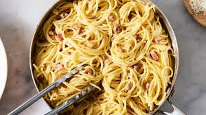

Carbonara

Ingredients
- 5 teaspoons olive oil
- 4 shallots, diced
- 1 pound guanciale, cut into strips (Alternatively use bacon)
- 1 clove garlic, chopped
- 1 (16 ounce) package dry fettuccine pasta
- ¾ cup shredded Parmesan cheese
- 3 egg yolks
- salt and pepper to taste
Directions
-
Heat olive oil in a large heavy saucepan over medium heat. Sauté shallots until softened. Stir in guanciale, cook and stir until guanciale is evenly browned.
Stir in garlic when guanciale is about half done. Remove from heat.
-
Bring a large pot of lightly salted water to a boil. Add pasta and cook for 8 to 10 minutes or until al dente. Drain pasta, then return it to the pot.
-
Whisk Parmesan, pepper and egg yolks together in a medium bowl. Pour bacon mixture over pasta; stir in cream mixture with some pasta water.